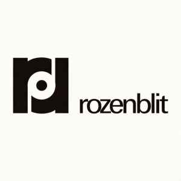

A História da Rozenblit
Uma narrativa visual e sonora sobre a fábrica que aproximou indústria, frevo, design, rádio, carnaval e identidade pernambucana.

A marca que se tornaria o principal símbolo da indústria fonográfica do Norte-Nordeste.
01
Antes da fábricaO sonho de fazer Pernambuco ouvir a própria voz
Muito antes de existir uma fábrica de discos na Estrada dos Remédios, Pernambuco já produzia música em abundância. O frevo dominava as ruas durante o carnaval, as rádios revelavam novos intérpretes, compositores criavam melodias que atravessavam gerações e orquestras animavam bailes por toda a região.
Mas havia um problema.
Grande parte dessa música precisava viajar para o Sudeste para ser registrada em disco. Os artistas pernambucanos dependiam de gravadoras localizadas principalmente no Rio de Janeiro e em São Paulo. Muitas vezes, a música nascida no Recife era gravada longe de casa, distante dos músicos, das ruas e do ambiente cultural que a inspirava.
Era como se Pernambuco cantasse, mas outra região fosse responsável por registrar sua voz.
Foi nesse contexto que surgiu uma ideia ousada: criar uma estrutura capaz de gravar, prensar e distribuir discos sem que a cultura pernambucana precisasse deixar sua terra de origem.
Mais do que um empreendimento industrial, essa visão representava uma afirmação cultural. Significava permitir que o Nordeste contasse sua própria história, utilizando seus próprios artistas, seus próprios músicos e sua própria identidade.
Quando a Rozenblit surgiria alguns anos depois, ela não estaria apenas fabricando discos. Estaria ajudando Pernambuco a preservar sua memória sonora.
"Pela primeira vez, Pernambuco não seria apenas inspiração. Tornaria-se também o lugar onde sua música seria eternizada."
02
1954 · Estrada dos Remédios · RecifeA fábrica que fez Pernambuco gravar sua própria história
Quando a Fábrica de Discos Rozenblit iniciou suas atividades em 1954, Pernambuco passou a possuir algo raro no Brasil daquela época: uma indústria fonográfica completa, capaz de transformar música em disco sem depender dos grandes centros do Sudeste.
Instalada na Estrada dos Remédios, no bairro de Afogados, a fábrica reunia em um único complexo industrial todas as etapas da produção fonográfica. Ali eram gravadas matrizes, prensados os discos de vinil, impressas as capas, montadas as embalagens e preparados os lançamentos que chegariam às rádios, lojas e colecionadores de todo o país.
Em um período em que a indústria cultural brasileira estava concentrada principalmente entre Rio de Janeiro e São Paulo, a Rozenblit demonstrava que Pernambuco possuía capacidade técnica, artística e empresarial para produzir seus próprios registros sonoros em larga escala.
Os corredores da fábrica eram movimentados diariamente por músicos, compositores, maestros, técnicos de gravação, ilustradores, fotógrafos, prensistas e funcionários especializados. Cada disco que saía da linha de produção carregava o trabalho de dezenas de profissionais responsáveis por transformar cultura em memória permanente.
Mais do que uma empresa, a Rozenblit tornou-se um símbolo da modernização pernambucana. Seus equipamentos industriais, sua capacidade de prensagem e sua rede de distribuição permitiram que frevos, cocos, cirandas, boleros, sambas e inúmeros artistas populares ultrapassassem as fronteiras do estado e alcançassem ouvintes em todo o Brasil.
Durante décadas, milhares de discos deixaram os galpões da Estrada dos Remédios levando consigo não apenas música, mas também a identidade cultural de Pernambuco. Cada vinil produzido preservava histórias, sotaques, ritmos e tradições que hoje formam um dos mais importantes patrimônios sonoros do Nordeste.
Uma potência cultural do Nordeste
A Rozenblit tornou-se a maior indústria fonográfica do Norte-Nordeste brasileiro. Sua estrutura permitiu registrar e preservar parte fundamental da memória musical pernambucana, transformando o Recife em um dos principais polos de produção de discos do país durante boa parte do século XX.
Os selos que construíram uma história
Mocambo
Frevo, música regional, carnaval e manifestações populares.
Passarela
Artistas populares e lançamentos voltados ao grande público.
Solar
Projetos especiais, novos artistas e produções experimentais.
03
Frevo como documentoO som do carnaval ganhou permanência
O frevo foi amplamente reproduzido pela Rozenblit e ganhou circulação para além do carnaval e das ruas. Discos, capas e fichas passaram a registrar orquestras, compositores, intérpretes, arranjos e repertórios.
Por isso, cada item do catálogo pode ser tratado como fonte histórica: não apenas uma música, mas uma prova material de como Pernambuco representou a si mesmo.
04
Capas, selos e cultura visualO disco também era imagem
Uma pesquisa Feita pela UFPE mostra que as capas da Rozenblit podem ser lidas como objetos de cultura material: elas guardam escolhas gráficas, símbolos, cores, letras, assinaturas e modos de representar o frevo.
Nesta versão do museu, a galeria de imagens podem virar uma exposição permanente: capas por década, selos, logomarcas, fotos da fábrica e documentos.
05
1975 · Perda e resistênciaQuando as águas levaram mais do que discos
Em algum lugar entre os corredores da fábrica, empilhados em estantes, armários e depósitos, estavam guardados milhares de registros sonoros. Vozes. Arranjos. Ensaios. Matrizes. Histórias inteiras gravadas em fita magnética e vinil.
Então vieram as águas.
As cheias do Rio Capibaribe atingiram a região e invadiram parte das instalações da Rozenblit. Equipamentos foram danificados. Documentos desapareceram. Fitas se perderam. Matrizes foram destruídas.
Mas talvez a maior perda não tenha sido material.
Muitas gravações nunca mais puderam ser recuperadas. Algumas versões originais desapareceram para sempre. Ensaios, registros de estúdio e documentos históricos deixaram de existir naquele momento.
Quando uma gravação desaparece, não se perde apenas uma música. Perde-se uma voz. Um sotaque. Um músico. Um arranjo. Um instante da história que jamais poderá ser recriado.
"A enchente não levou apenas discos. Levou capítulos inteiros da memória musical pernambucana."
Décadas depois, colecionadores, pesquisadores, universidades e apaixonados pela música brasileira ainda tentam localizar exemplares sobreviventes, restaurar gravações e reconstruir informações perdidas.
Cada disco encontrado hoje é mais do que um objeto. É um sobrevivente.
Cada capa preservada. Cada ficha técnica recuperada. Cada faixa digitalizada. Cada fotografia restaurada. Representa uma pequena vitória contra o esquecimento.
Por que este museu existe?
Este acervo digital nasce justamente para impedir que novas perdas aconteçam. Catalogar, digitalizar e contextualizar não é apenas organizar informações. É proteger a memória cultural de Pernambuco para as próximas gerações.
Cada disco preservado aqui é uma resposta ao tempo, às enchentes, aos incêndios e ao esquecimento.
Galeria documental
Clique em qualquer imagem para expandir e apreciar os detalhes históricos.
Linha do tempo cultural
1953 — O selo Mocambo anuncia um novo caminho
O primeiro disco do selo consolida a ideia de registrar o frevo com músicos e intérpretes pernambucanos.
1954 — A fábrica é aberta no Recife
A Rozenblit nasce em Afogados com ambição industrial e cultural.
Anos 1960 — Auge e expansão
A empresa amplia selos, catálogo e presença nacional, sem abandonar o repertório regional.
Anos 1970 — Psicodelia, frevo e contracultura
A Rozenblit participa de obras lendárias do udigrudi pernambucano e da música brasileira.
Hoje — Acervo digital
O catálogo, as fichas e as imagens documentais reaproximam leitores, pesquisadores e ouvintes dessa história.